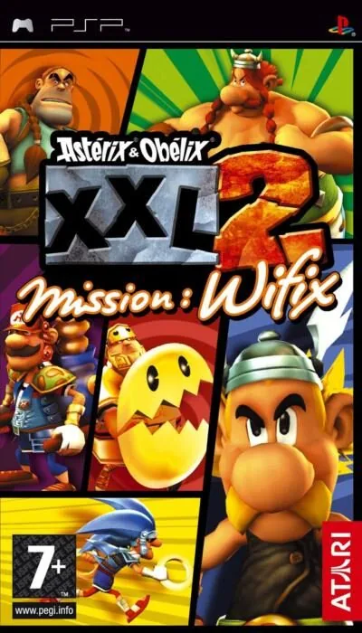
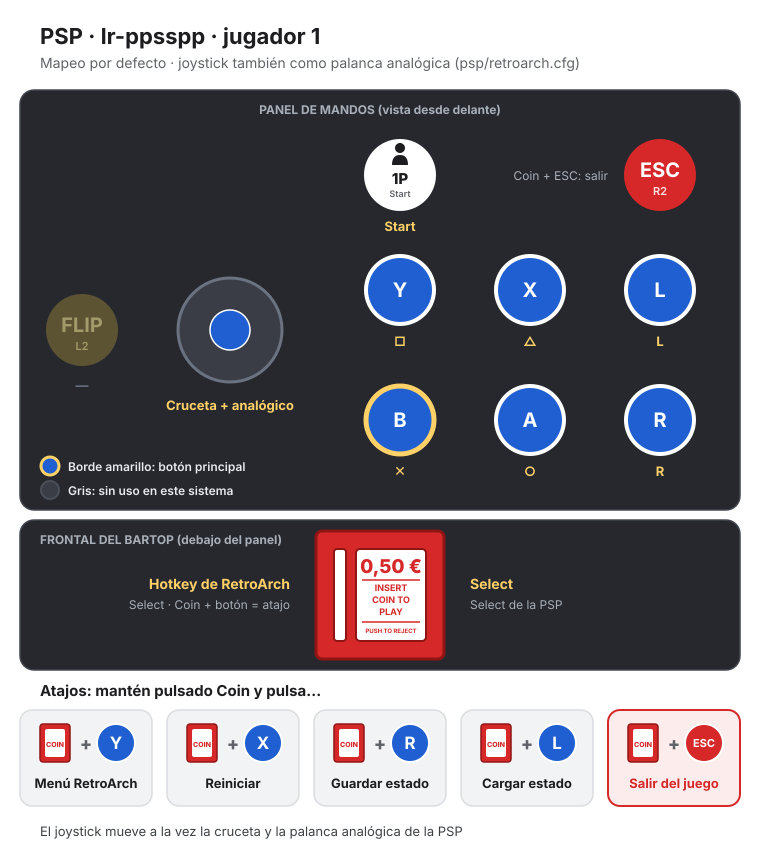

PSP
Asterix & Obelix XXL 2: Mission Wifix
- Año: 2006
- Desarrollador: Tate Interactive
- Género: Acción
- Jugadores: 2 jugadores
Astérix y Obélix XXL 2 te lleva a un recorrido lleno de acción por el asombroso parque temático «Las Vegum». En esta historia original, el druida Panorámix se comporta de forma muy extraña y todos los demás druidas famosos del Imperio romano han desaparecido... Las Vegum, la Ciudad de los Juegos, es idea del visionario Julio César. Sus calles laberínticas te llevarán por barrios como Little Paris, WCW, Lucksore, Little Venetia, la Isla Pirata e incluso el Seizeus Palace.
Controles
Mando de PSP. El joystick mueve la cruceta y también la palanca analógica, porque muchos juegos de PSP solo se mueven con ella.
| Panel | Juego |
|---|---|
 | ✕ |
 | ○ |
 | □ |
 | △ |
 | L |
 | R |
 | Start |
 | Select |
+  | Salir del juego |
El panel en PSP


Longplay

Partida completa de la versión PSP (409 min), de SloofmanPlays: Asterix & Obelix XXL 2: Mission Wifix (PSP) HD LONGPLAY.